Introduction
Acest produs informatic are scopul de a ajuta o farmacie in a isi gestiona produsele in mod intern,
creand
medicamente, categorii de medicamente si furnizori. Se pot crea utilizatori ce au dreptul de a vizualiza
produsele,
si de a isi schimba parola. Datele utilizatorilor pot fi editate doar de catre Administrator.
Intern, utilizatorii sunt farmacistii ce au nevoie de permisiuni de vizualizare asupra produselor
din farmacie,
putand eventual sa editeze datele acestora.
Printre altele, utilizatorii (farmacistii) pot sa raporteze o problema, in cazul in care utilizatorii
constata o problemă.
Gestionarea utilizatorilor
Gestionarea utilizatorilor poate fi facută doar de catre un administrator, si aceasta se face prin intermediul submeniului Conturi -> Gestionare utilizatori
Ecranul de gestionare a utilizatorilor este:
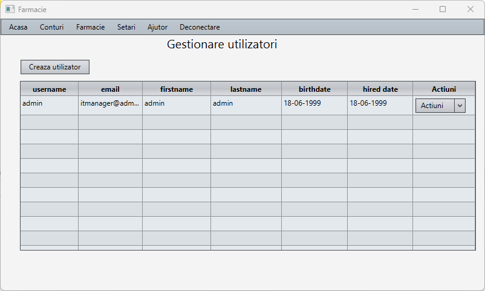Daca se da click pe butonul adauga:
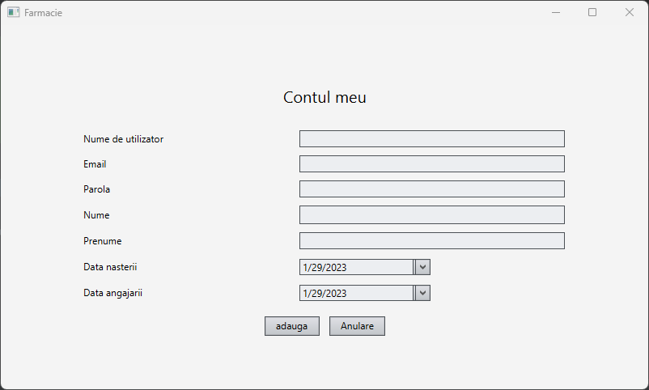- Actualizeaza, de exemplu: 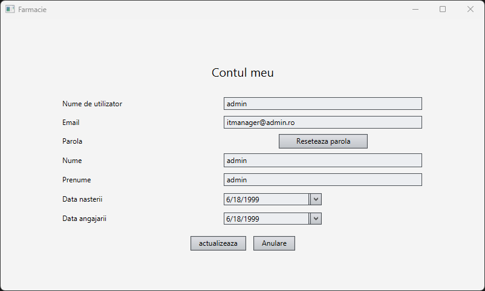
- sterge, ce doar sterge utilizatorul
Daca se da click pe actiuni exista 2 optiuni posibile:
Gestionare medicamente
In aceasta parte se pot actualiza medicamentele si categoriile acestora. Ecranele specifice de vizualizare a datelor sunt: 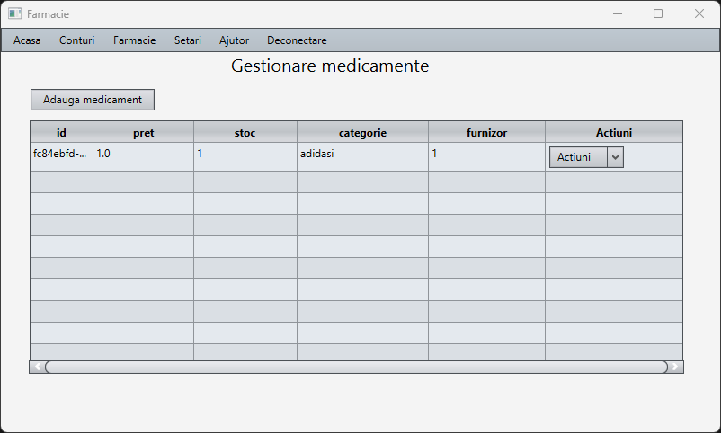 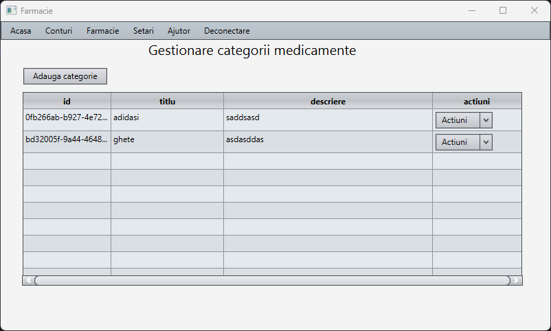
Un exemplu de modificare a datelor unui medicament este:
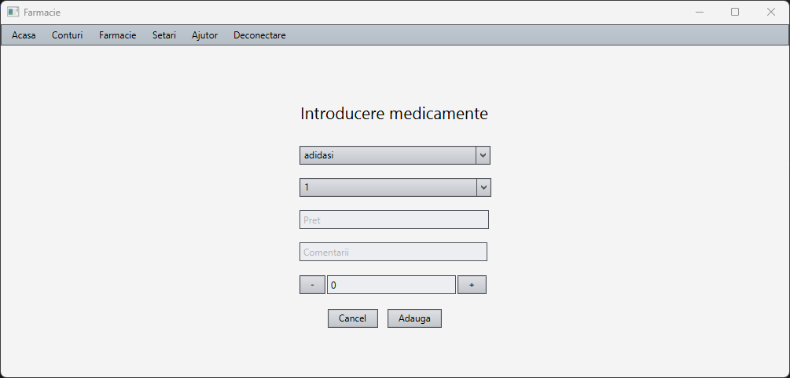Gestionarea furnizorilor
Furnizor prezinta aceleasi functionalitati ca la medicamente, un exemplu de view pentru acesta fiind:
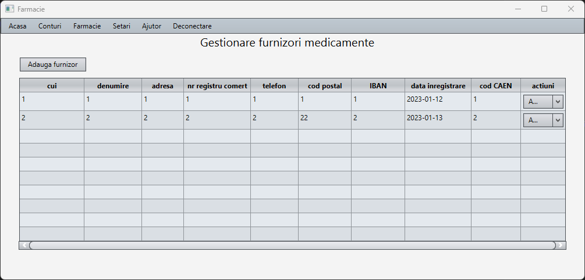Vizualizarea setarilor de platforma
Setarile de platforma sunt salvate intr-o clasa statica si pot fi vizualizate cu aceasta pagina. Un exemplu este:
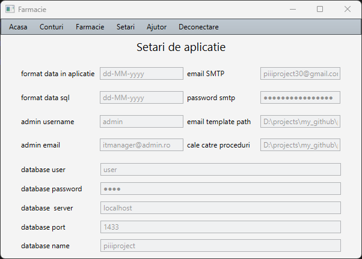Gestionarea erorilor
Erorile au fost gestionate astfel incat aplicatia sa nu se blocheze si sa continue indiferent de probleme. In cazul unei probleme de validare, se va arunca o fereastra de tip pop-up cu greselile efectuate, in functie de context.
Data Backup si recuperare
Explanation of how to backup and recover data
Troubleshooting
In cazul intampinarii unei probleme, se pot trimite intern din aplicatie email-uri de suport.
De exemplu:
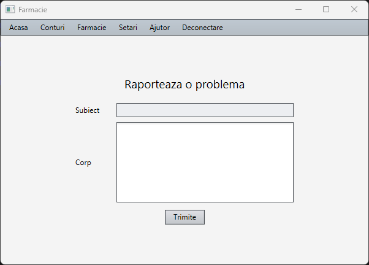De asemenea, se poate accesa documentatia folosind tot meniul ajutor, in cazul unei nelamuriri de functionare, sau pentru cei mai tehnici, se poate vizualiza javadoc-ul.
Accesarea se face in felul urmator:
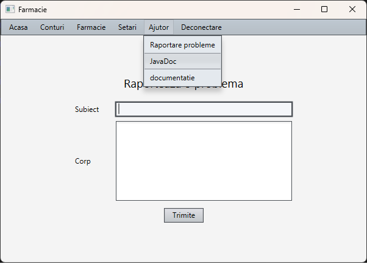Deschiderea javadocului sau a documentatiei ar trebui prezentata in browser, asemanator ca in exemplul urmator:
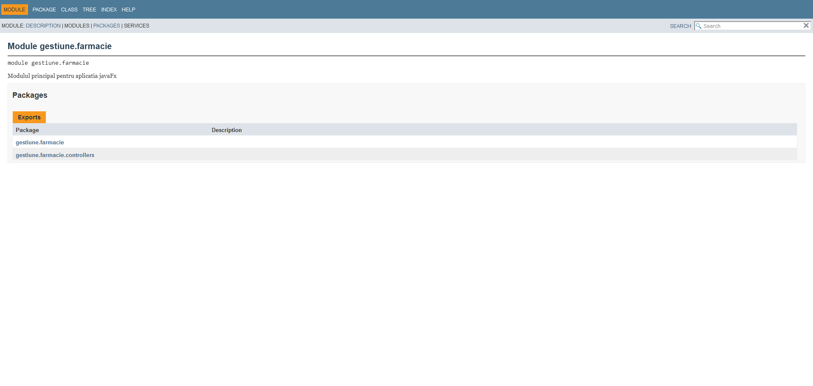